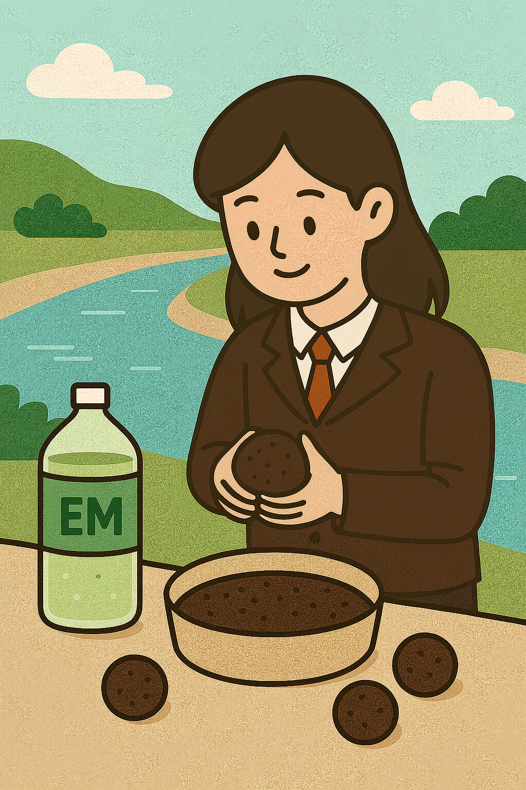
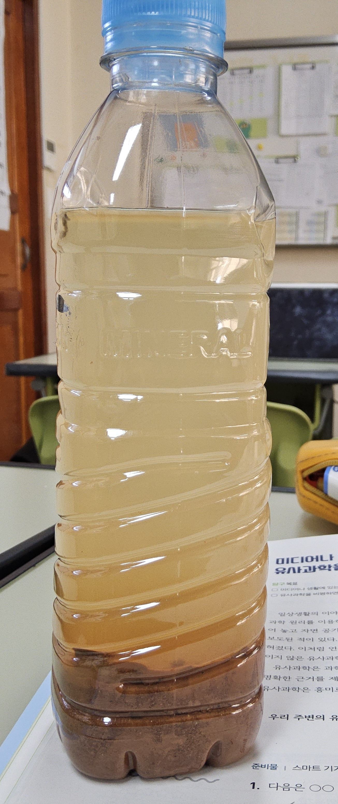
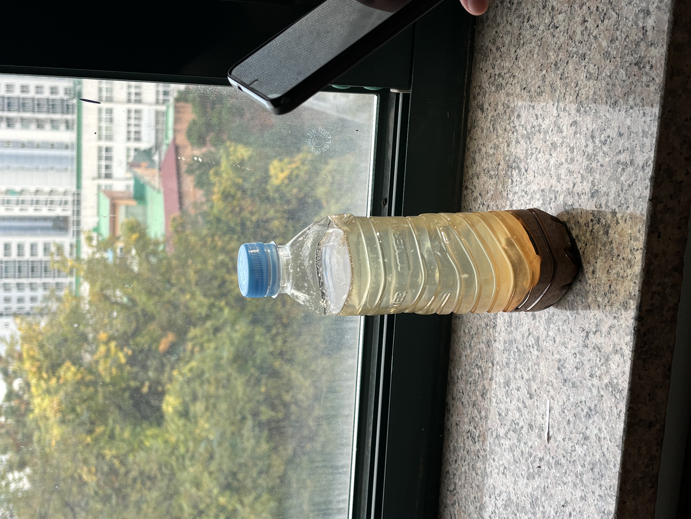
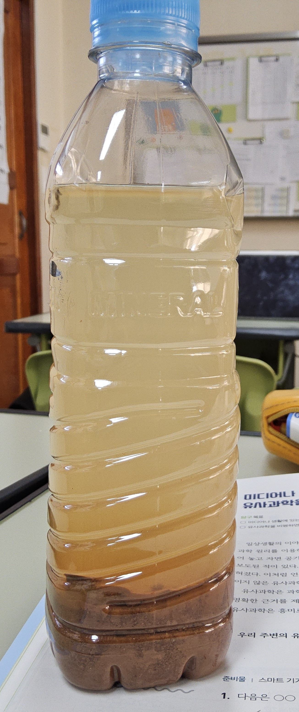
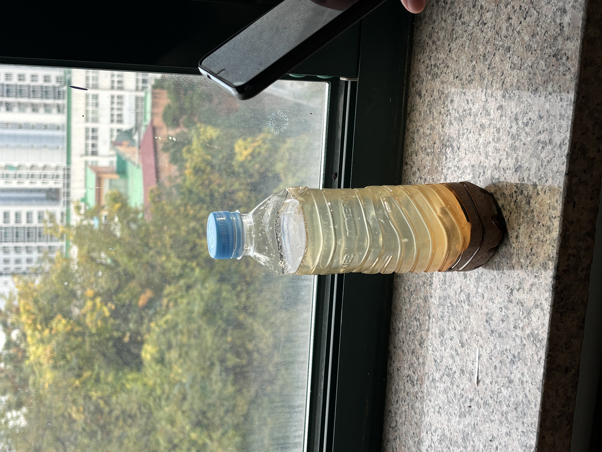

EM 흙공 수질 정화 프로젝트
EM(유용 미생물)을 활용한 흙공을 직접 제작하고 오염된 연못에 투척하여 수질 개선 효과 실험
하천 오염: 보이지 않는 위험
하천 오염물질인 중금속, 농약, 질소·인 등의 영양염류는 생태계에 독성을 주고 부영양화를 발생시켜 조류와 남조류가 번식해 산소 부족·생태계 붕괴를 초래한다. 이는 결국 하천의 자정 능력 감소와 생물다양성 감소로 이어진다.
오염된 하천 물이 인간의 피부질환, 신경장애, 암 등의 건강 문제를 초래하며 대표적 사례로 1956년 일본 미나마타병이 있다. 수질 오염은 지역 경제·관광·농업에도 치명적 피해를 준다.
EM 흙공이란?
EM(Effective Micro-organisms)은 유익한 미생물들의 집합으로, 이 미생물들이 서로 협력하여 오염물질을 분해하고 악취를 제거한다.
EM 흙공은 황토 + EM 발효액 + EM 발효퇴비(8:1:1)를 반죽해 일주일 이상 발효시켜 만든 자연 정화 도구이다. 하천에 넣으면 미생물이 서서히 녹아 나오며 오염물 분해 + 부패 억제 + 수질 개선을 촉진한다.
EM 흙공이 실제로 물을 맑게 한다고?
국내 여러 지자체 및 기업 사례에서도 EM 흙공을 하천에 투입한 뒤 탁도 감소, 악취 감소, 물빛 개선 효과가 보고되었다.
실제로 EM 흙공을 연못에 투입한 실험에서는 2주 후 물이 맑아진 모습이 확인되었다. EM수와 일반수를 비교한 실험에서도 EM수는 부유물 침전 속도 증가가 뚜렷하게 나타났다.
EM 흙공 제작 과정
| 단계 | 설명 |
|---|---|
| 1. 반죽 | 황토 + EM발효액 + EM발효퇴비를 8:1:1로 섞어 반죽 |
| 2. 성형 | 야구공 크기로 동그랗게 빚기 |
| 3. 발효 | 일주일 이상 따뜻한 곳에서 자연 발효 |
| 4. 투입 | 하천·연못에 투입하여 정화 효과 관찰 |
실험 및 관찰 결과
- pH 6.8 → 7.3 (중성화)
- 탁도 감소·물빛 개선
- 용존산소 증가 → 미생물 활동 활성화
- 악취 감소, 자정 작용 증가
- EM수는 일반수보다 침전 속도가 빠름
 



느낀 점
EM 흙공 프로젝트에 직접 참여하면서, 미생물이 단순한 이론 속 존재가 아니라 실제로 수질 변화를 이끌어내는 생명체라는 사실을 생생하게 느낄 수 있었다. 작은 흙공 하나에 담긴 미생물의 활동이 물을 바꾸는 과정을 보며 자연의 원리가 얼마나 정교하게 작동하는지 깨달았다.
또한 환경 보호는 거창한 행동이 아니라 물 절약, 친환경 세제 사용, 음식물 쓰레기 하수구 투기 줄이기처럼 일상 속 작은 실천에서부터 시작된다는 점을 다시 생각하게 되었다.
이번 활동은 단순한 실험을 넘어, 앞으로 지속 가능한 생활을 실천해야 한다는 책임감을 느끼게 해준 경험이었다.